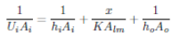
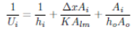
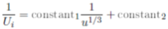
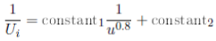

Chemical Engineering →Chemical Engineering Lab →List Of Experiments
Heat transfer in a double pipe heat exchanger
Laminar Flow
In a heat exchanger, heat is transferred from hot fluid to cold fluid through metal wall, which generally separates these two fluids. Heat transfer through metal wall is always by conduction while on both sides of metal wall it is generally by convection. Generally resistance offered to heat transfer by the metal wall is negligible as compared to resistance offered by convection. The wall temperature is always between local temperatures of the two fluids. The actual value depends upon individual film heat transfer coeffcient on either sides.
At low Reynold's number (Re < 2100), the flow pattern is laminar and the fluid flows in an ordered manner along generally parallel "Filament like" streams which do not mix. It follows that in this type of flow, that the heat transferred to and through the fluid is essentially by conduction.
Laminar flow generally happens when dealing with small pipes , low flow velocities and with highly viscous fluids. At low velocities fluids tend to flow without lateral mixing,and adjacent layers slide past one another like playing cards. There are neither cross currents nor eddies. Laminar flow can be regarded as a series of liquid cylinders in the pipe, where the innermost parts flow the fastest, and the cylinder touching the pipe isn't moving at all.

OR

Once the heat exchanger material and its geometry is fixed, then the metal wall resistance Δx/KAlm becomes constant. Similarly, if the flow rate of cold fluid is fixed and its mean temperature does not differ much for different flow rates of hot fluid, then the resistance by the outside film will remain almost constant. Thus, the overall heat transfer coeffcient will depend upon the value of inside film heat transfer coeffcient alone. If flow through inner tube is in the laminar flow regime, then Sieder-Tate equation can be used to predict the inside film heat transfer coeffcient.
Nu=1.86(Re)1/3(Pr)1/3
If the bulk mean temperature does not differ much for different flow rates, then all the physical properties will remain nearly the same and equation can be re-written as:
Nu=constant*(velocity)1/3
Substituting equation, one can write it as:

Thus, the graph of 1/Ui vs 1/u1/3 (which is known as Wilson plot) should be a straight line with a slope equal to constant1 and intercept equal to constant2. From this graph, inside film heat transfer coefficient can be calculated which can be used to verify Sieder-Tate equation.
Turbulent Flow
In a heat exchanger, heat is transferred from hot fluid to cold fluid through metal wall which generally separates these two fluids. Heat transfer through metal wall is always by conduction while on both sides of metal wall it is generally by convection. Generally resistance offered to heat transfer by the metal wall is negligible as compared to resistance offered by convection. The wall temperature is always between local temperatures of the two fluids. The actual value depends upon individual film heat transfer coefficient on either sides.
At higher Reynold's number (Re > 10, 000), the ordered flow pattern of laminar flow regime is replaced by randomly moving eddies thoroughly mixing the fluid and greatly assisting heat transfer. However, this enhancement of film heat transfer coeffcient is accompanied by much higher pressure drop which demands higher pumping power. Thus, although desirable, turbulent flow is usually restricted to fluids of low viscosity. In turbulent flow, the fluid moves erratically in the form of cross currents and eddies. Turbulent flow happens in general at high flow rates and with larger pipes. When heat is transferred through resistances in series, the total resistance to heat transfer is the sum of individual resistances in series. Thus, for heat exchanger, one can write,
OR
Once the heat exchanger material and its geometry is fixed, then the metal wall resistance (Δx/KAlm) becomes constant. Similarly, if the flow rate of cold fluid is fixed and its mean temperature does not differ much for different flow rates of hot fluid, then the resistance by the outside film will remain almost constant. Thus, the overall heat transfer coefficient will depend upon the value of inside film heat transfer coefficient alone. If flow through inner tube is in the turbulent flow regime, then Ditturs-Boelter equation can be used to find out inside film heat transfer coefficient.
Nu=0.023(Re)0.8(Pr)n
If the bulk mean temperature does not differ much for different flow rates, then all the physical properties will remain nearly the same and equation can be re-written as:
Nu=constant*(velocity)0.8
Substituting the above equation, we get:

Thus, the graph of 1/Ui vs 1/u0.8 (which is known as Wilson plot) should be a straight line with a slope equal to constant1 and intercept equal to constant2. From this graph, inside film heat transfer coefficient can be calculated which can be used to verify Dittus-Boelter equation.